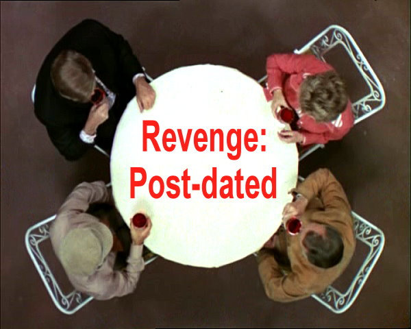

THE ZOO GANG, Revenge: Post-Dated
Researched
and compiled by Paul Stroud
All locations in Nice unless otherwise stated
Please help find the Missing Locations for this episode
All locations in Nice unless otherwise stated
Please help find the Missing Locations for this episode

2:38
Promenade des Anglais
Promenade des Anglais


3:02
Place Grimaldi, Cagnes-sur-Mer
Google Maps
Boucher arrives in courtyard and approaches Thomas Devon Jeweller
Place Grimaldi, Cagnes-sur-Mer
Google Maps
Boucher arrives in courtyard and approaches Thomas Devon Jeweller

9:27
Nice Côte d’Azur Airport
Nice Côte d’Azur Airport

17:34
Sea front looking towards the Carlton Hotel along Boulevard de la Croissette, Cannes
Sea front looking towards the Carlton Hotel along Boulevard de la Croissette, Cannes


17:40
West End Hotel, Promenade des Anglais
Boucher steps out of the West End Hotel and into his chauffeur-driven car.
West End Hotel, Promenade des Anglais
Boucher steps out of the West End Hotel and into his chauffeur-driven car.


18:22
Palais Paradiso,
Boulevard de Cimiez
Bing Bird’s Eye view
Boucher arrives at a large house where he meets Smith. Alec follows and parks in Avenue Brown Séquart.
Palais Paradiso,
Boulevard de Cimiez
Bing Bird’s Eye view
Boucher arrives at a large house where he meets Smith. Alec follows and parks in Avenue Brown Séquart.


35:29
Le Negresco, Promenade des Anglais/Rue de Rivoli,
Alec waits opposite the Negresco for the rest of the team to arrive. Later Steve and Tommy emerge after interesting Boucher in the missing Rembrandt.
Le Negresco, Promenade des Anglais/Rue de Rivoli,
Alec waits opposite the Negresco for the rest of the team to arrive. Later Steve and Tommy emerge after interesting Boucher in the missing Rembrandt.

38:07
Route de la Turbie/Avenue des Diables Bleus
Steve drives Manouche and Tommy around a hairpin bend from Route
de la Turbie onto Avenue des Diables Bleue to inform Alec that Boucher
is on his way from the hotel.
Route de la Turbie/Avenue des Diables Bleus
Steve drives Manouche and Tommy around a hairpin bend from Route
de la Turbie onto Avenue des Diables Bleue to inform Alec that Boucher
is on his way from the hotel.


46:25
Le Versailles, Boulevard Princesse Grâce de Monaco
The Zoo Gang all agree to form a vigilante group, robbing the young to give to the old.
Le Versailles, Boulevard Princesse Grâce de Monaco
The Zoo Gang all agree to form a vigilante group, robbing the young to give to the old.
Missing locations


28:52
Alec steals a car to take the gang to the museum. Unfortunately he later admits “I didn’t notice the name of the street.”
Alec steals a car to take the gang to the museum. Unfortunately he later admits “I didn’t notice the name of the street.”


40:01
Alec leads Boucher to a remote farmhouse
Alec leads Boucher to a remote farmhouse

40:13
Path leading to the farmhouse.
Possibly different location from above. The branches belong to a tree to
the left of this shot, not present in the previous shot.
Path leading to the farmhouse.
Possibly different location from above. The branches belong to a tree to
the left of this shot, not present in the previous shot.

40:24
Close-up of the remote house.
Close-up of the remote house.
Bonus Feature

Opening titles
Boulevard Général Leclerc, Beaulieu-sur-Mer, the top of the Hotel Frisia or le Pointu.
The gang drink a toast
Boulevard Général Leclerc, Beaulieu-sur-Mer, the top of the Hotel Frisia or le Pointu.
The gang drink a toast